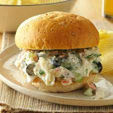

What are fish sandwiches made of? Fried Fish Sandwich Recipe - NYT Cooking This fried fish sandwich doesn't stray far from the classic fast-food staple: breaded fish, a soft bun, a slice of cheese and tangy tartar sauce. The best part is you can put it together in just about the amount of time it would take to stand in line and order it at the counter.
